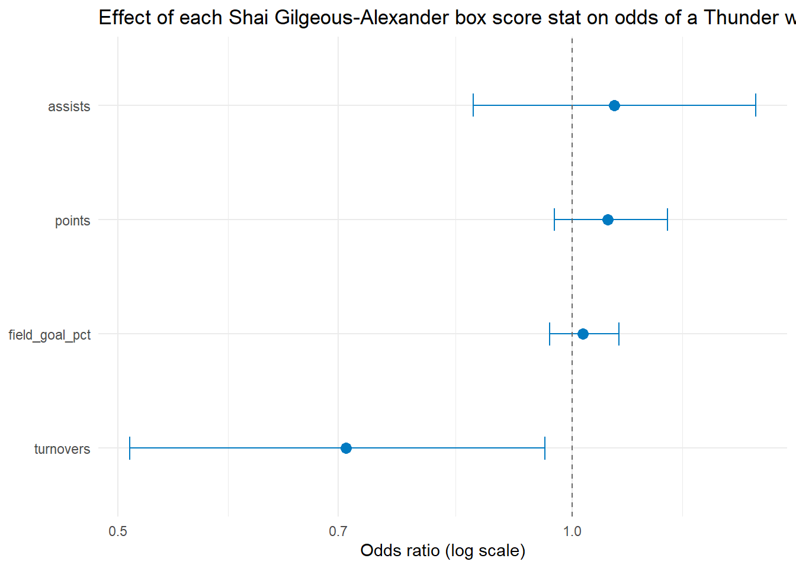

library(tidyverse)
library(broom)
library(plotly)Shai Gilgeous-Alexander: Logistic Regression Example
Does his individual box score predict whether the Thunder win?
Setup
sga <- read_csv(
"../../pipeline/nba/data/player_stats/nba_player_Shai_Gilgeous-Alexander_2025.csv",
show_col_types = FALSE
) |>
filter(team_name == "Thunder") |> # drop the All-Star Weekend "Team Chuck" rows
mutate(
field_goal_pct = field_goals_made / field_goals_attempted * 100,
team_winner = as.logical(team_winner)
)
nrow(sga)[1] 101Filtering to team_name == "Thunder" matters here — the raw file also contains two 2025 All-Star Game rows (team_name == "Team Chuck"), which aren’t real Thunder games and would contaminate team_winner.
Single-predictor logistic regression
Question: does the number of points Shai scores in a game predict whether the Thunder win that game?
model_pts <- glm(team_winner ~ points, data = sga, family = binomial)
summary(model_pts)
Call:
glm(formula = team_winner ~ points, family = binomial, data = sga)
Coefficients:
Estimate Std. Error z value Pr(>|z|)
(Intercept) -1.15544 1.14299 -1.011 0.3121
points 0.08084 0.03767 2.146 0.0319 *
---
Signif. codes: 0 '***' 0.001 '**' 0.01 '*' 0.05 '.' 0.1 ' ' 1
(Dispersion parameter for binomial family taken to be 1)
Null deviance: 102.791 on 99 degrees of freedom
Residual deviance: 97.602 on 98 degrees of freedom
(1 observation deleted due to missingness)
AIC: 101.6
Number of Fisher Scoring iterations: 4pts_range <- data.frame(
points = seq(min(sga$points, na.rm = TRUE), max(sga$points, na.rm = TRUE), length.out = 500)
)
pts_range$prob <- predict(model_pts, newdata = pts_range, type = "response")
plot_ly(data = pts_range, x = ~points, y = ~prob, type = "scatter", mode = "lines") |>
layout(
title = "Probability of a Thunder Win by Shai's Points Scored",
xaxis = list(title = "Points"),
yaxis = list(title = "Probability of Winning")
)Interpretation
points is a significant predictor (p = 0.032), with a positive coefficient (0.081, odds ratio ≈ 1.084) — each additional point he scores multiplies the Thunder’s odds of winning that game by about 1.08, roughly an 8% increase in odds per point. That’s a real but modest relationship: scoring is one ingredient in a team win, not the whole recipe, which is exactly what you’d expect from a single player’s point total predicting a team outcome.
Adding more predictors
Question: once we account for shooting efficiency, assists, and turnovers together, which of Shai’s box score stats actually move the needle on winning?
model1 <- glm(team_winner ~ points + field_goal_pct + assists + turnovers,
data = sga, family = binomial)
summary(model1)
Call:
glm(formula = team_winner ~ points + field_goal_pct + assists +
turnovers, family = binomial, data = sga)
Coefficients:
Estimate Std. Error z value Pr(>|z|)
(Intercept) -0.64456 1.48304 -0.435 0.6638
points 0.05464 0.04379 1.248 0.2121
field_goal_pct 0.01649 0.02670 0.618 0.5368
assists 0.06404 0.10896 0.588 0.5567
turnovers -0.34530 0.15919 -2.169 0.0301 *
---
Signif. codes: 0 '***' 0.001 '**' 0.01 '*' 0.05 '.' 0.1 ' ' 1
(Dispersion parameter for binomial family taken to be 1)
Null deviance: 102.791 on 99 degrees of freedom
Residual deviance: 91.821 on 95 degrees of freedom
(1 observation deleted due to missingness)
AIC: 101.82
Number of Fisher Scoring iterations: 4Interpretation
Once field_goal_pct, assists, and turnovers are in the model together, points (p = 0.21) and field_goal_pct (p = 0.54) both drop out of significance — their earlier apparent effect was largely riding on top of other stats. The standout is turnovers (p = 0.030, odds ratio ≈ 0.71): each additional turnover Shai commits multiplies the Thunder’s odds of winning by about 0.71, roughly a 29% drop in odds per turnover. assists (p = 0.56) isn’t significant.
Ball security is the stat most reliably tied to a Thunder win in Shai’s box scores — not volume scoring or shooting percentage.
Visualizing the multi-predictor model
coef_df <- tidy(model1, conf.int = TRUE, exponentiate = TRUE) |>
filter(term != "(Intercept)")
ggplot(coef_df, aes(x = estimate, y = reorder(term, estimate))) +
geom_point(size = 3, color = "#007AC1") +
geom_errorbar(aes(xmin = conf.low, xmax = conf.high), width = 0.2, color = "#007AC1") +
geom_vline(xintercept = 1, linetype = "dashed", color = "grey40") +
scale_x_log10() +
labs(x = "Odds ratio (log scale)", y = NULL,
title = "Effect of each Shai Gilgeous-Alexander box score stat on odds of a Thunder win") +
theme_minimal()
Model discrimination: AUC
complete_idx <- as.numeric(rownames(model.frame(model1)))
preds <- fitted(model1)
actual <- sga$team_winner[complete_idx]
wins <- preds[actual == TRUE]
losses <- preds[actual == FALSE]
auc <- mean(outer(wins, losses, ">")) + 0.5 * mean(outer(wins, losses, "=="))
cat("AUC:", auc, "\n")AUC: 0.6829415 Interpretation
AUC ≈ 0.68. That means if you picked one Thunder win and one Thunder loss at random from Shai’s games and used only his personal box score (points, FG%, assists, turnovers) to guess which was the win, the model would guess right about 68% of the time — clearly better than a coin flip, but far from perfect. That makes sense: one player’s stat line is informative but incomplete — it can’t fully explain a team outcome that also depends on four teammates and the opponent.
Takeaways from this example
- Turnovers, not scoring, is the most statistically reliable driver of a Thunder win in Shai’s box score — the opposite of what you might guess from his gaudy scoring averages.
- Points alone looks predictive in isolation (p = 0.032) but loses significance once turnovers and assists are controlled for — a caution against reading too much into a single-predictor model.
- A single player’s box score only partially predicts a team win (AUC ≈ 0.68) — a sanity check that matches basketball intuition: no one player’s line fully determines a team result.